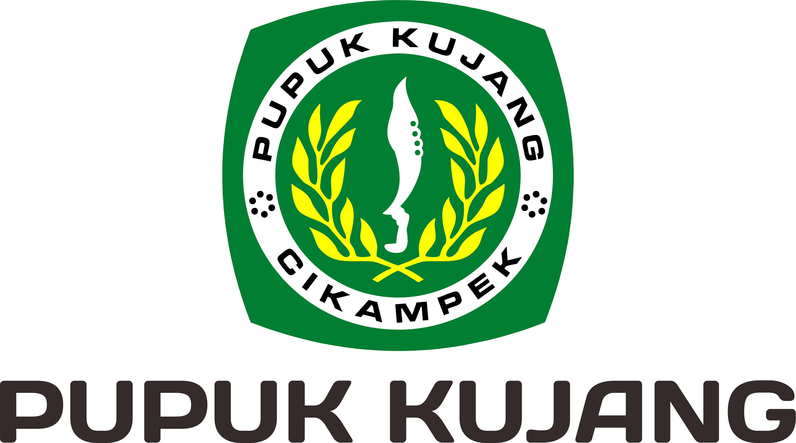

SIAPA KAMI
Tentang Kami
Sekilas mengenai visi, misi, dan nilai-nilai perusahaan yang kami pegang.
Kami adalah perusahaan yang bergerak di bidang distribusi dan berkomitmen menghadirkan produk berkualitas dengan layanan terbaik untuk memenuhi kebutuhan pasar yang terus berkembang.
Dengan pengalaman, jaringan distribusi yang luas, serta sistem kerja yang profesional, kami hadir sebagai mitra terpercaya bagi pelanggan dan mitra bisnis di berbagai sektor industri.
Visi Kami
Menjadi perusahaan distribusi terkemuka yang menghubungkan kualitas, kecepatan, dan keberlanjutan untuk menciptakan pertumbuhan bersama bagi pelanggan, mitra, dan masyarakat.
Misi Kami
- 1. Membangun jaringan distribusi yang kuat, efisien, dan adaptif terhadap perkembangan pasar.
- 2. Mengutamakan integritas, transparansi, dan kepercayaan dalam setiap hubungan bisnis.
- 3. Mendukung pertumbuhan mitra usaha melalui solusi distribusi yang bernilai tambah dan berkelanjutan.
- 4. Mengembangkan sumber daya manusia yang kompeten, inovatif, dan berorientasi pada kepuasan pelanggan.
Official Distribution Partners
